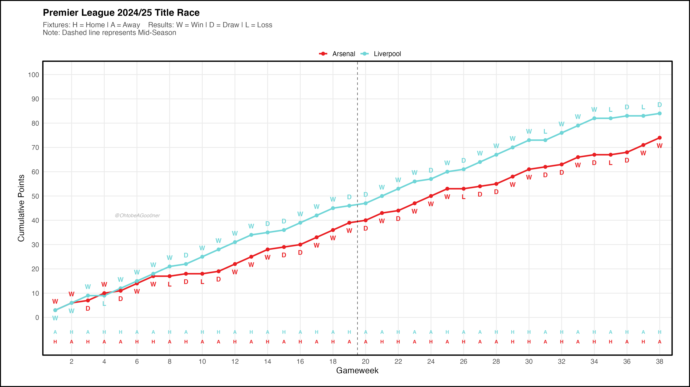
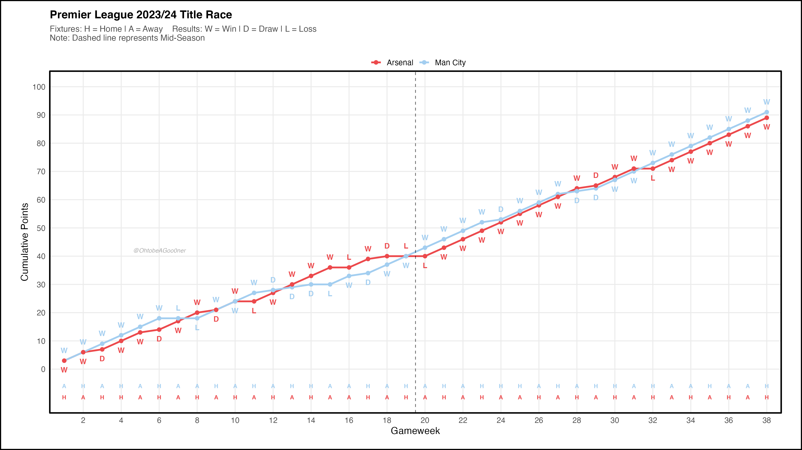
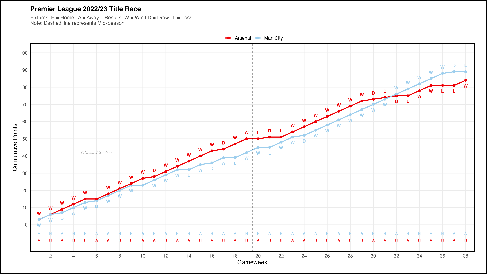
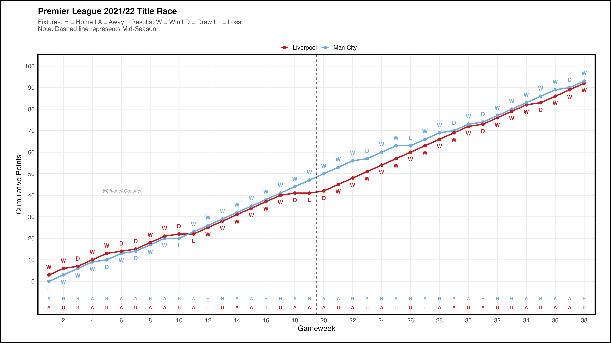
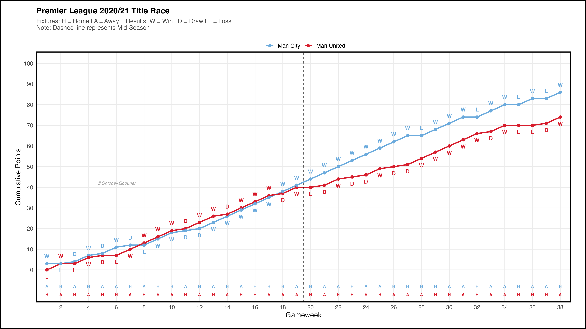
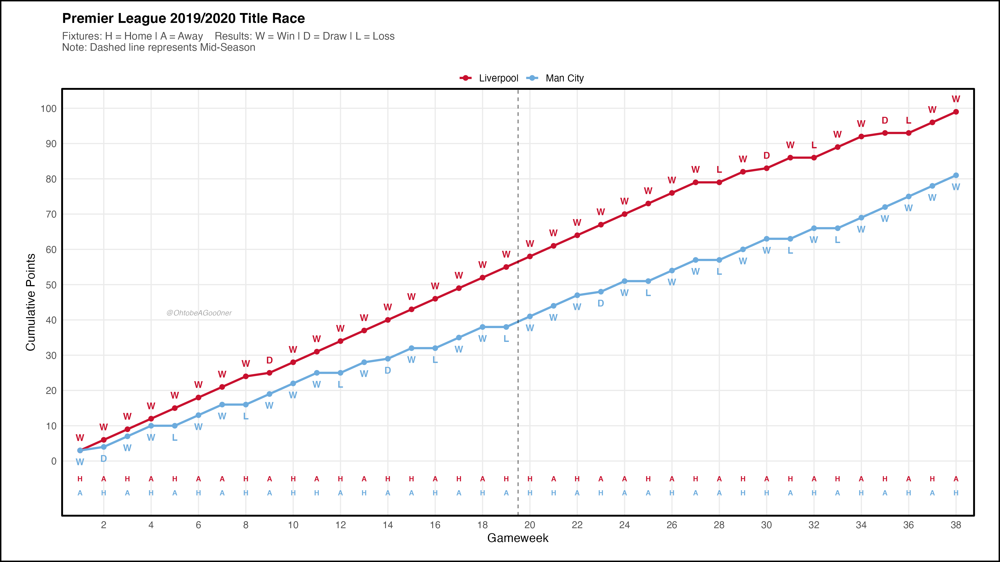
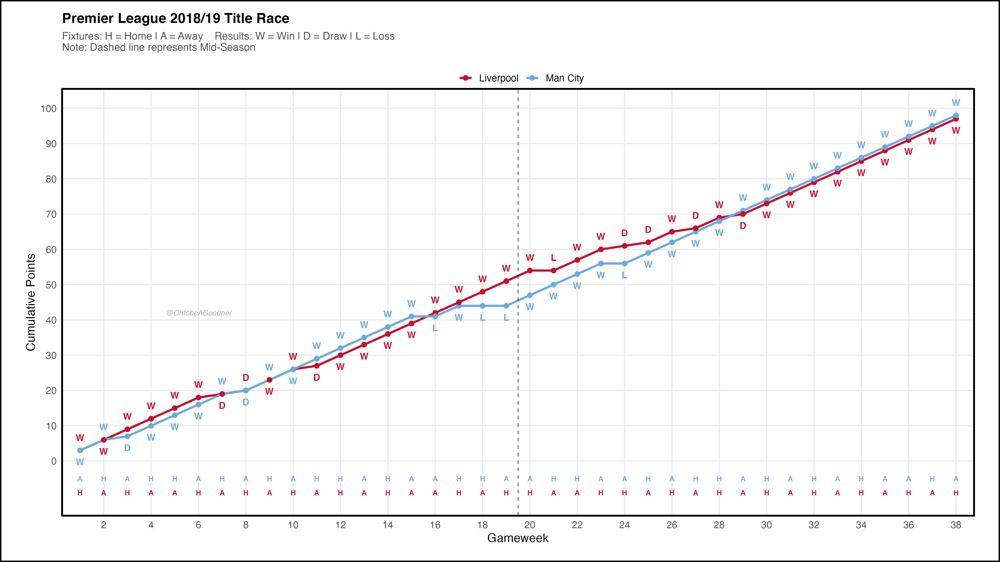
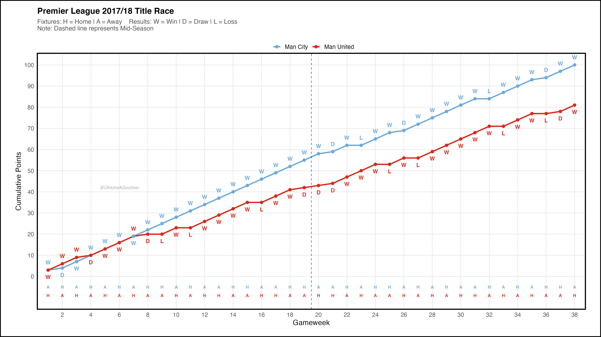
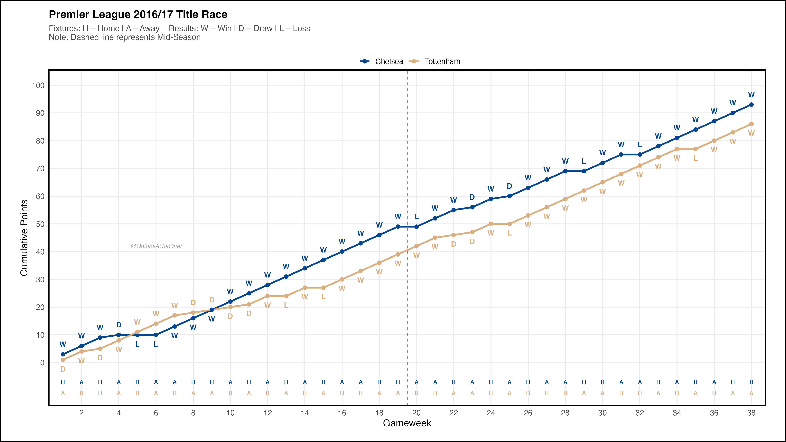
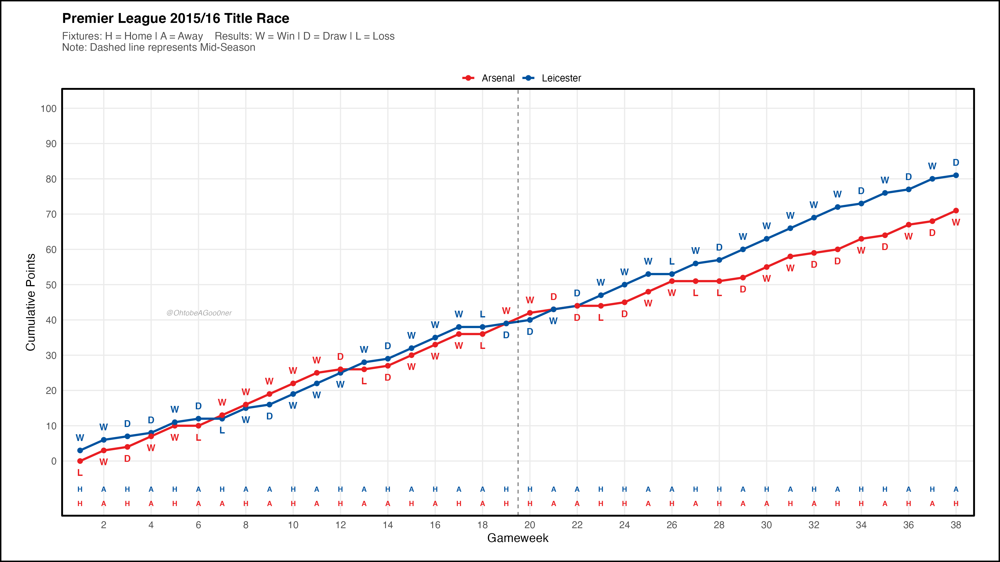

The Premier League Title Race: A Decade of Dominance
Data Visualization
R
Sports Economics
Visualizing the points gap and competitive intensity of the English Top Flight from 2015 to 2025.
Analysis Overview
While this began as a data visualization exercise, the results tell a compelling story of market concentration in football. We see the shift from the “unpredictable” era—highlighted by Leicester City’s 5000-to-1 title win—to a high-efficiency duopoly dominated by Manchester City and Liverpool, where finishing with 90+ points no longer guarantees a trophy.
Season-by-Season Visualization










Data & Methodology
The data was sourced from Football-Data.co.uk and processed in R.
- Visualization: Built with
ggplot2using a custom-themed layout (\(16 \times 9\) ratio). - Economic Lens: The project examines the “winner-take-all” nature of modern football, where the marginal return on point accumulation has shifted drastically over the last decade.